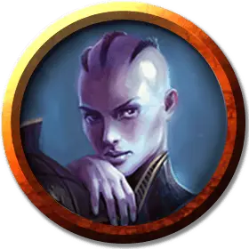

Шпион мысли
Thought Spy
Средний Гуманоид (Любая раса), нейтрально-злой

Класс Доспеха 13 (кожаный доспех)
Хиты 27 (6к8)
Скорость 30 футов
| мод | спас | ||
|---|---|---|---|
| СИЛ | 11 | +0 | +0 |
| ЛОВ | 14 | +2 | +2 |
| ТЕЛ | 10 | +0 | +0 |
| мод | спас | ||
|---|---|---|---|
| ИНТ | 16 | +3 | +3 |
| МДР | 13 | +1 | +1 |
| ХАР | 14 | +2 | +2 |
Навыки Восприятие +3, Ловкость рук +4, Обман +6, Проницательность +3, Расследование +5, Скрытность +4
Чувства тёмное зрение 30 футов, пассивное Восприятие 13
Языки Общий, плюс два других языка
Опасность 1 (200 опыта)
Бонус мастерства +2
Особенности
Хитрое действие. В каждый свой ход шпион мысли может бонусным действием совершить Рывок, Отход или Засада.
Врожденное колдовство (псионика). Базовой характеристикой заклинаний шпиона мысли является Интеллект (Сл спасброска от заклинания 13). Шпион мысли может использовать следующие заклинания, без использование компонентов:
• Неограниченно: очарование личности [charm person], маскировка [disguise self], кодировка мыслей [encode thoughts];
• 1/день каждое: размытый образ [blur], обнаружение мыслей [detect thoughts], газообразная форма [gaseous form].
Действия
Мультиатака. Шпион мысли совершает две рукопашные атаки или три дальнобойные атаки Кинжалами.
Кинжал. . Дальнобойная или рукопашная атака оружием: +4 к попаданию, досягаемость 5 фт. или дистанция 20/60 фт., одна цель. Попадание: 4 (1к4 + 2) колющего урона.
Рапира. . Рукопашная атака оружием: +4 к попаданию, досягаемость 5 фт., одна цель. Попадание: 6 (1к8 + 2) колющего урона.
Описание
Шпионы мысли составляют основу тайных операций Дома Димир. Они обучены скрытности и проникновению, тактике, которую они дополняют строго развитыми умственными способностями. Чтобы никакие секреты не ускользнули из рук Димира, они проникают в соперничающие гильдии. В дополнение к традиционным средствам сбора информации, шпионы мысли используют свою магию, чтобы шпионить за мыслями своих целей.